works / design
design portfolio
🐇 Mich 3D Studios
From Procreate, to Solidworks, to Bambulab 3D Prints
As a combination of my passion for design and robotics, Mich 3D Studios is a manifestation of my interdisciplinary career interests. One of the biggest critiques of 3D printed products is their lack of a clean, aesthetic appeal. I wanted to make keychains and phone charms that were affordable, easy to manufacture, and pleasing to the eye.
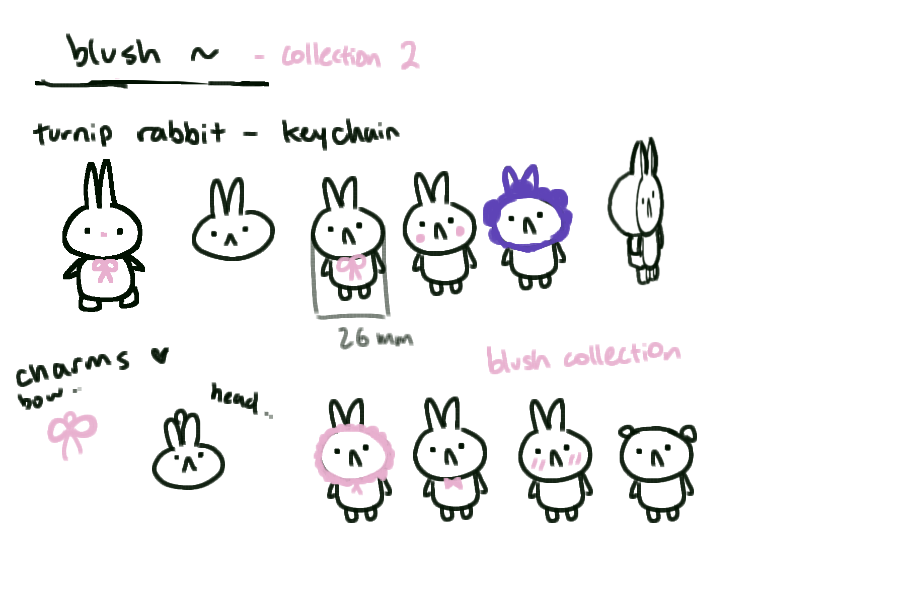
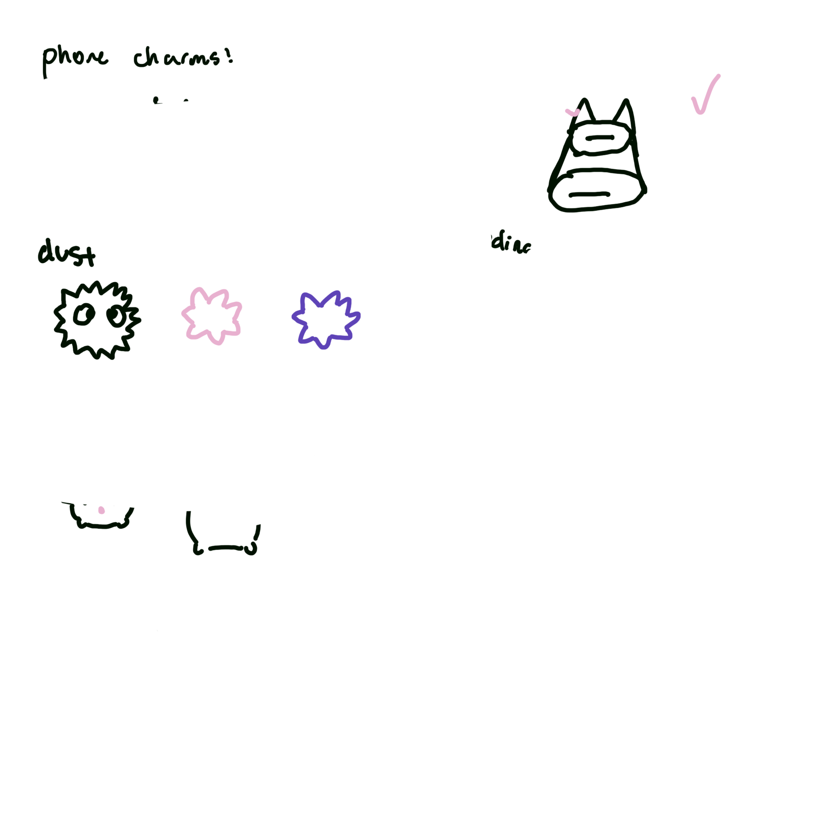
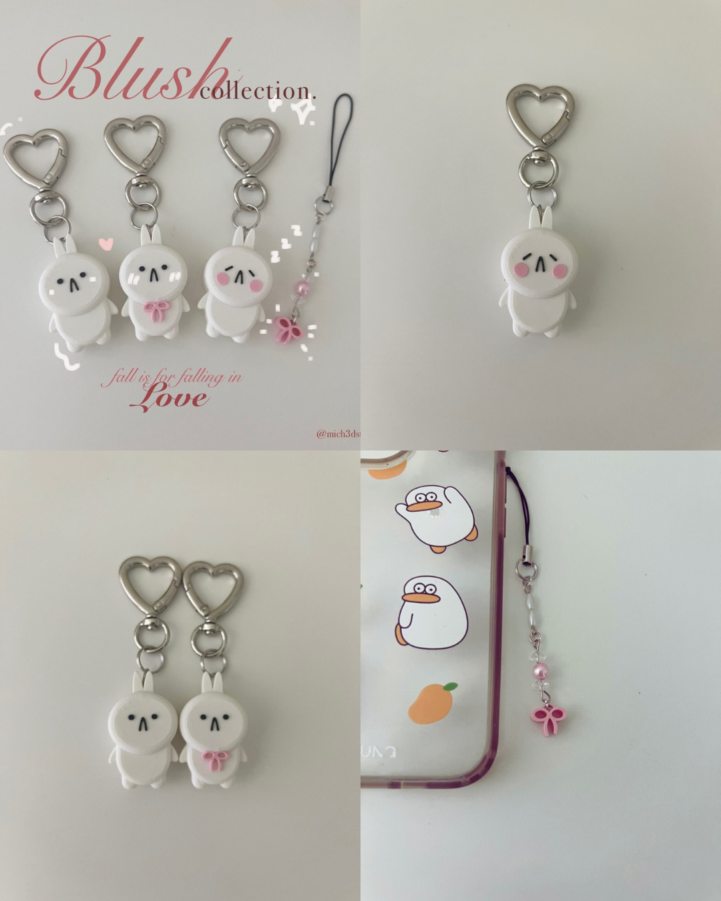
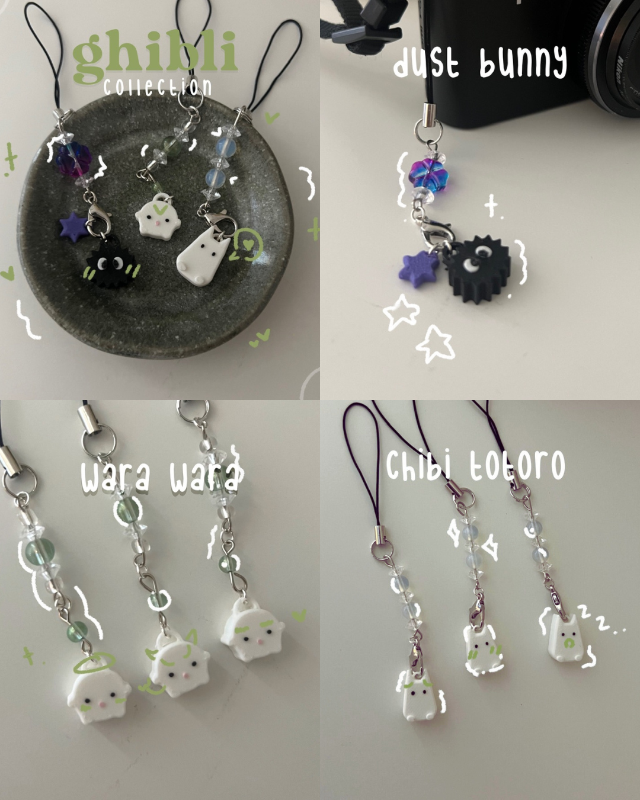
🎨 Graphic Design
Created using Adobe Illustrator and Photoshop
Through taking Graphic Design in highschool, I was proud of several pieces of work that are displayed below. The MOMA Andy Warhol poster was selected to be displayed at the Arcadia Public Library as well as the school's art showcase.
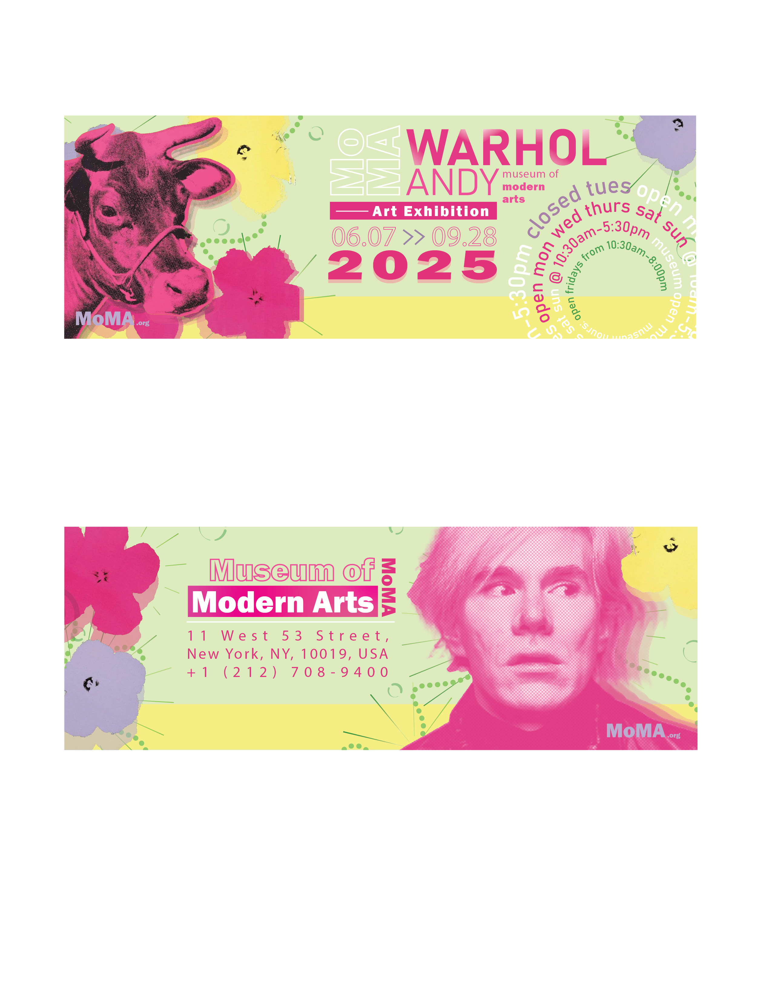
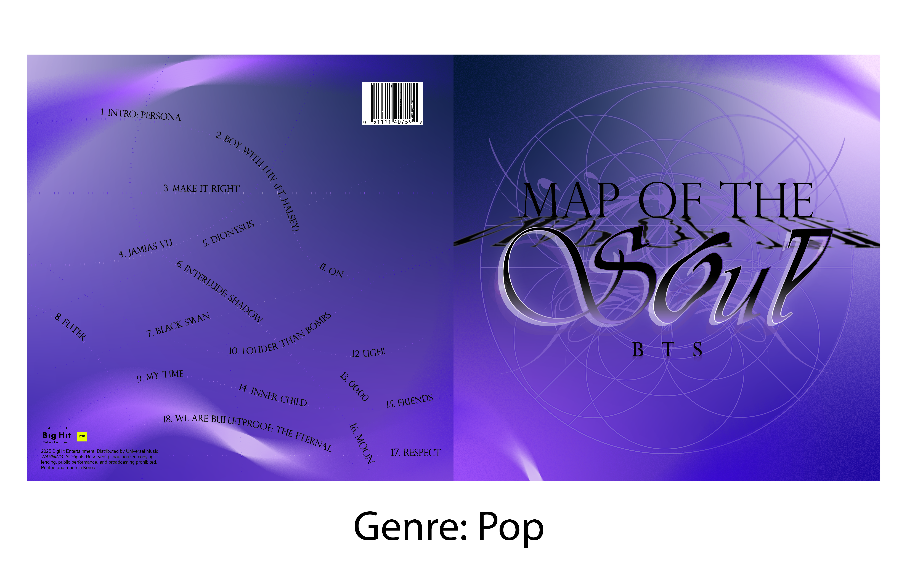
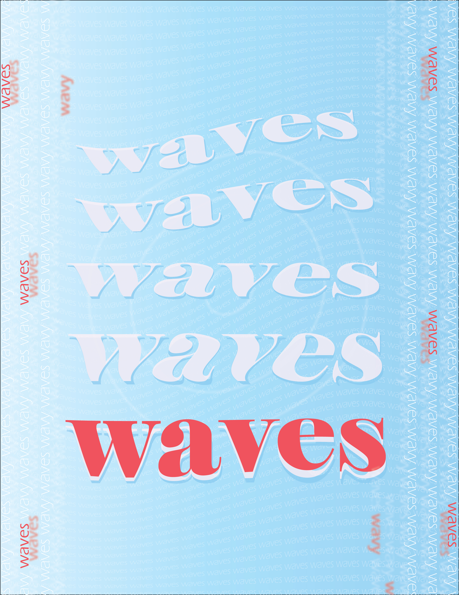
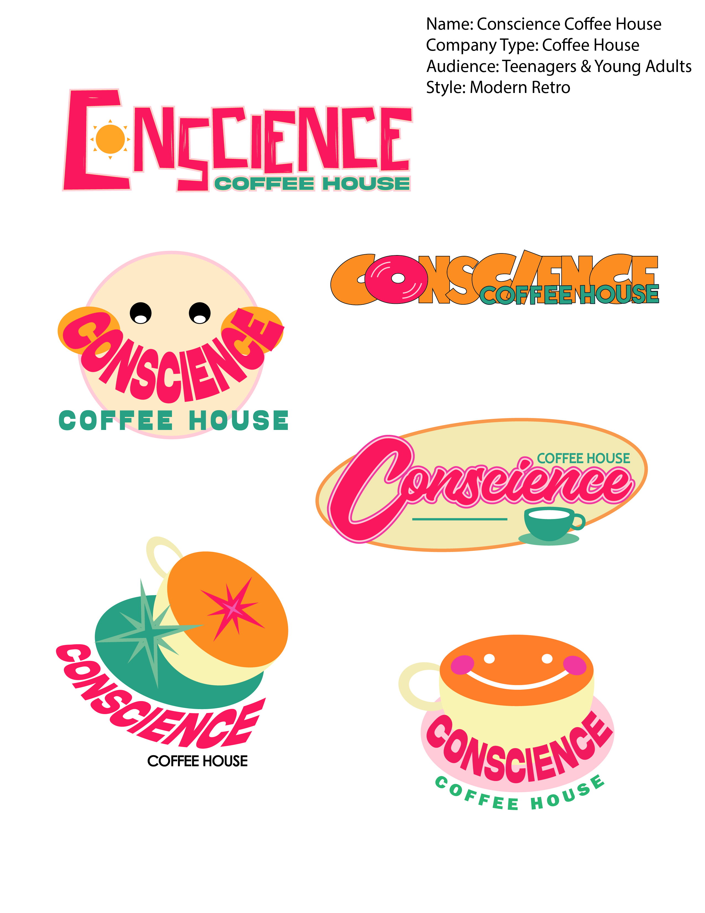
⚙️ Social Media Posts
Created with Canva
I created several Instagram posts of competition recaps for my VEX Robotics Team. I designed them based off of the event color scheme as well as taken many of the photos.
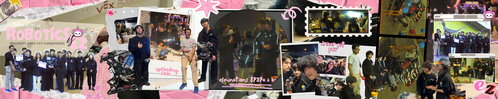
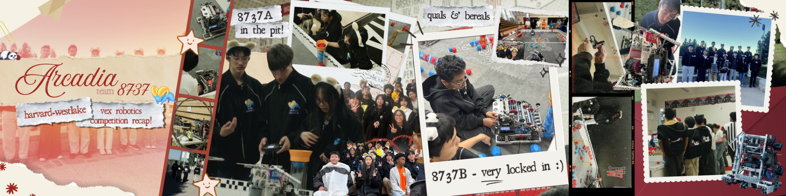
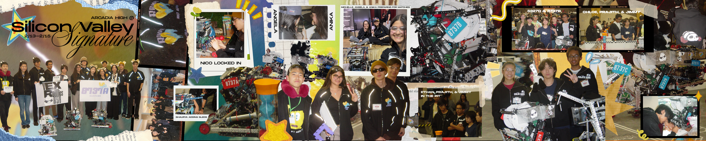
✉️ Student Government Frolic Planning
Created with Procreate
As the lead planner for the yearly student ball at Taipei American School, Frolic, I was responsible for creating the theme and graphics for the event. The background and photo frames were both used for the photo booth. The poster was displayed throughout the event. In addition, I also delegated the decoration of the venue.
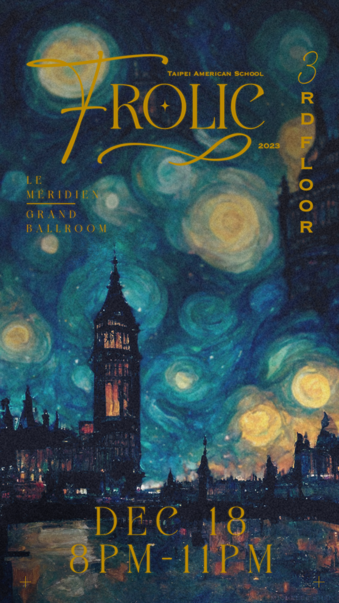
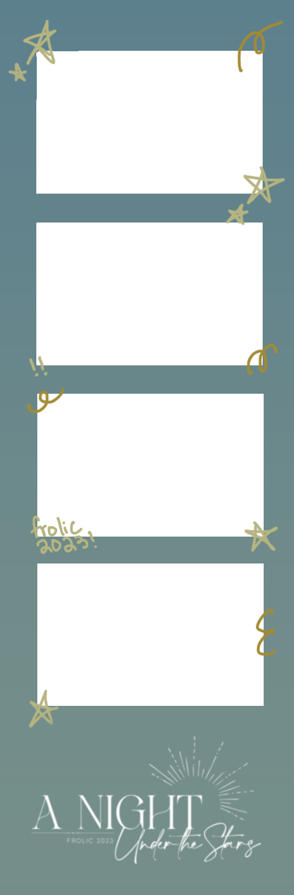
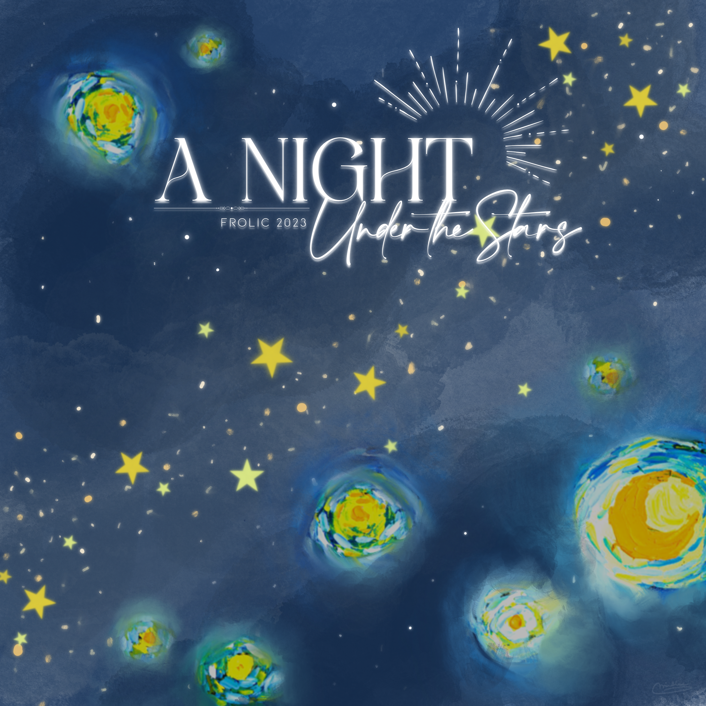